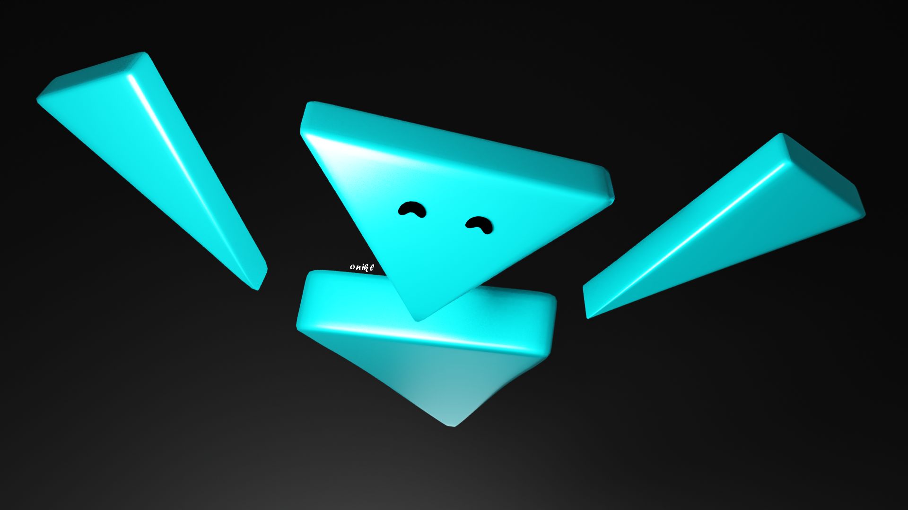
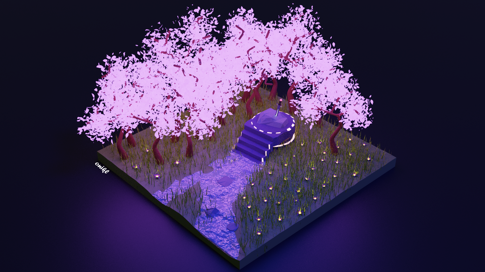
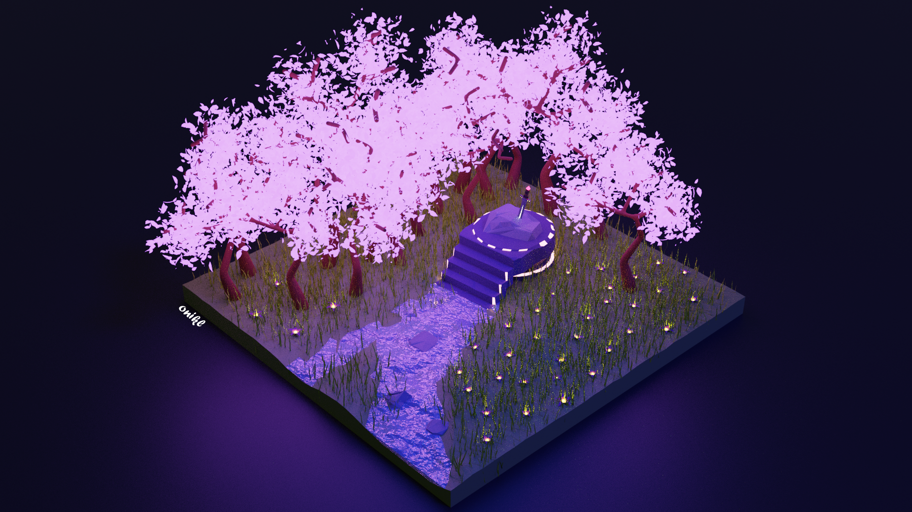
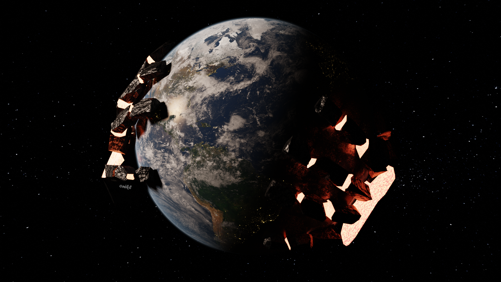
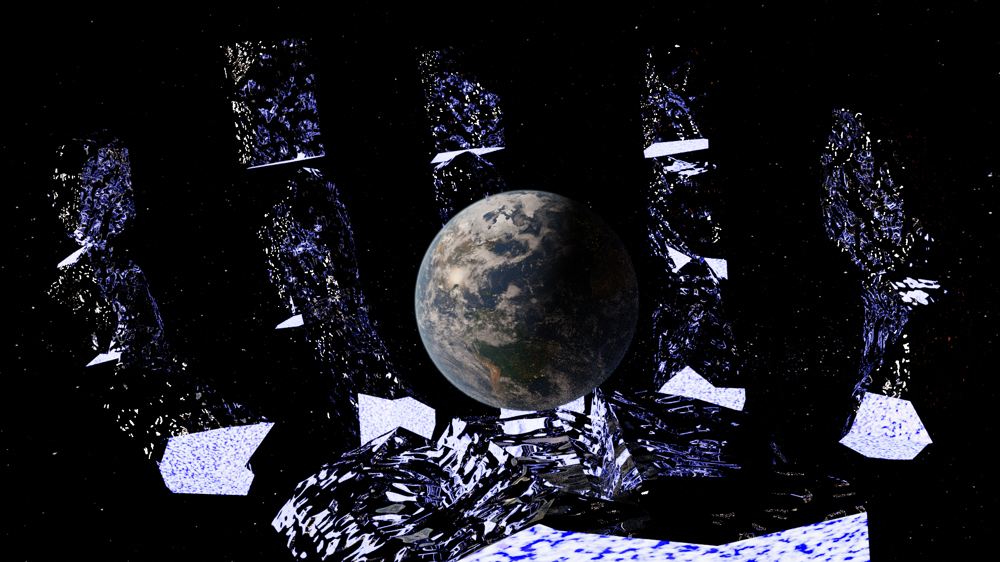
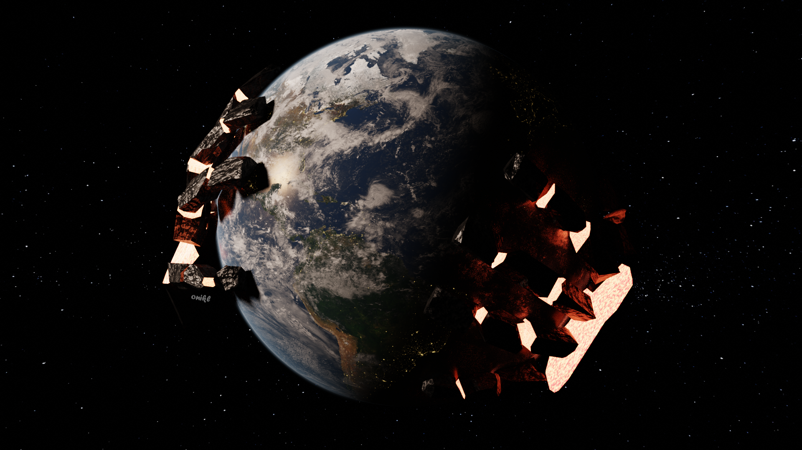
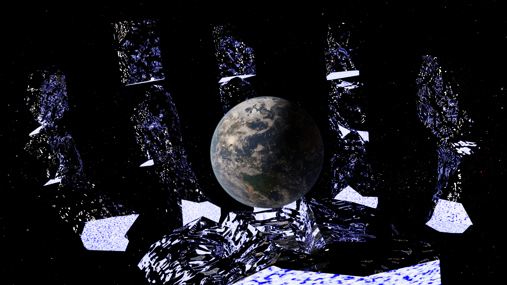
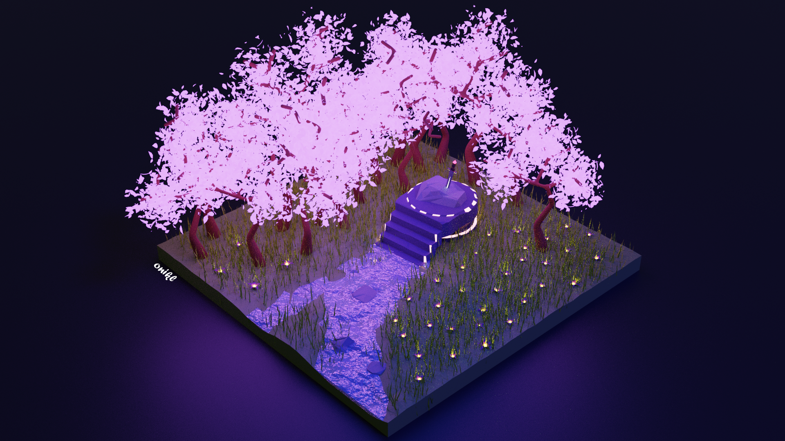
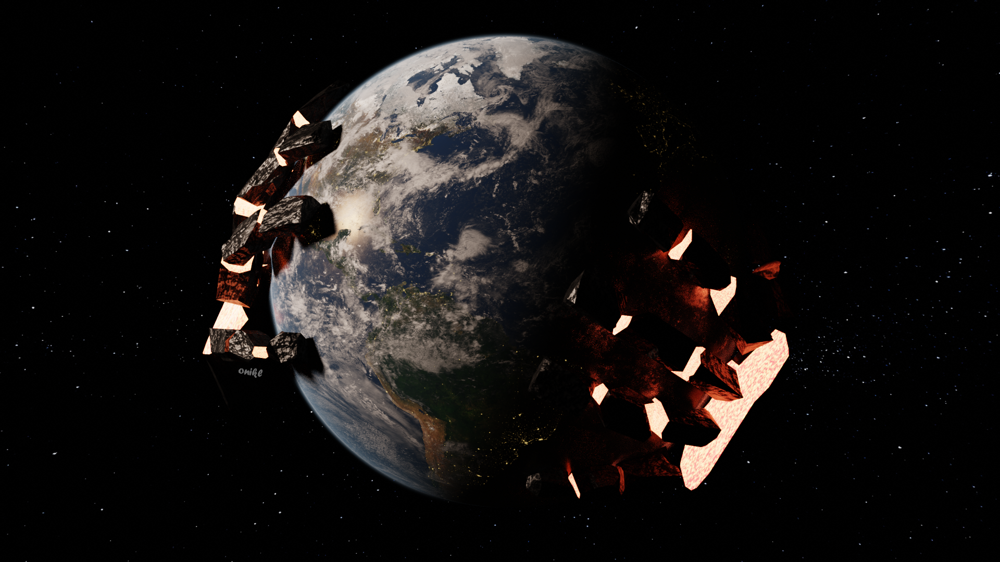
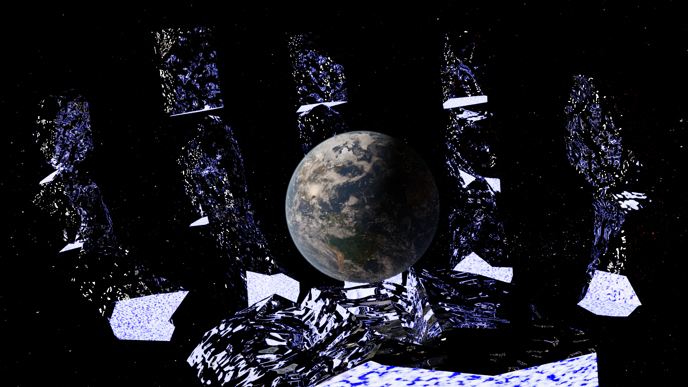

Página personal

Guillermo Abbá
Buenos días, buenas tardes o buenas noches! Soy Guillermo Abbá y esta es mi primer página personal, hecha para la materia Programación 1 de la UNRaf.
DATOS
- Nombre: Guillermo
- Apellido: Abbá
- Edad: 19 años
- Fecha de nacimiento: 14 de Julio de 2001
- País: Argentina
- Ciudad: Rafaela, Santa Fe
- Lugar de Estudio: Universidad Nacional de Rafaela (UNRaf)
GUSTOS Y PASATIEMPOS
- Hacer y escuchar música
- Modelado y escultura 3D
- Ver películas, series y videos
- Jugar videojuegos
- Mirar las estrellas
- Aprender cosas interesantes
Estos son algunos de mis trabajos en 3D en orden cronológico!

 

 








Y estos son algunos de mis trabajos musicales!
-
"Help From Ouside"
-
"A New Perspective"
-
"Facility"
-
"Screams From The Pocket"
-
"Arriving"